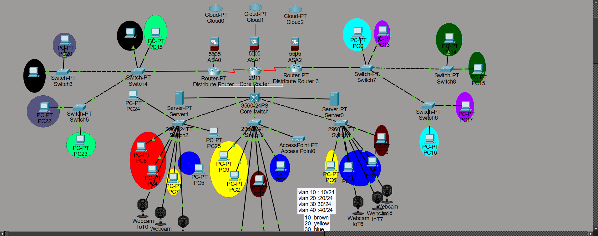
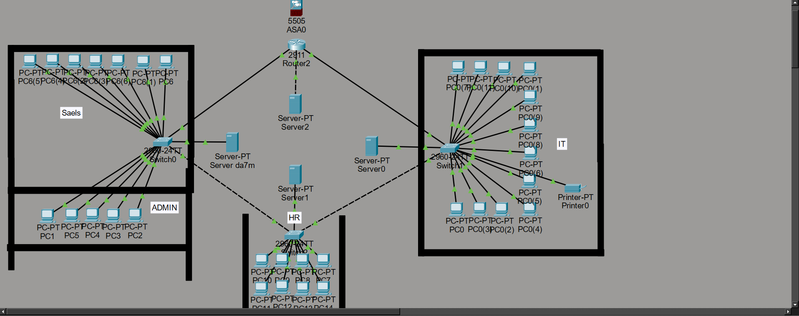

Enterprise Network
Multi-branch enterprise network designed with VLAN segmentation, routing and centralized infrastructure. تصميم شبكة مؤسسية متعددة الفروع باستخدام VLANs وتقنيات التوجيه وبنية تحتية مركزية.
I am a Network Specialist focused on designing, managing and securing reliable network infrastructures that connect people, systems and organizations. متخصص في تصميم وإدارة وتأمين الشبكات والبنية التحتية التقنية، وأسعى إلى بناء بيئات شبكية موثوقة وآمنة وقابلة للتوسع.
A technical mindset with a strong interest in networking, infrastructure and secure enterprise environments. عقلية تقنية وشغف بمجال الشبكات والبنية التحتية والبيئات المؤسسية الآمنة.
My work revolves around designing and managing network environments from the initial planning stage to implementation, administration and troubleshooting. أعمل على تصميم وإدارة بيئات الشبكات ابتداءً من مرحلة التخطيط وتحليل المتطلبات، مرورًا بالتنفيذ والإدارة، ووصولًا إلى المراقبة واستكشاف الأخطاء وإصلاحها.
I focus on creating infrastructures that are reliable, scalable, organized and aligned with modern networking practices. أركز على بناء بنية تحتية موثوقة وقابلة للتوسع ومنظمة، مع تطبيق أفضل الممارسات الحديثة في مجال الشبكات.
Designing structured and scalable network architectures.
Applying security concepts to protect network resources.
Managing servers, services and technical infrastructure.
Analyzing network issues and finding effective solutions.
Core technologies and areas I work with and continuously develop. أهم المجالات والتقنيات التي أعمل عليها وأطور خبرتي فيها باستمرار.
VLANs, OSPF, STP, routing, switching and network fundamentals.
Enterprise topology, IP addressing, segmentation and scalability.
Active Directory, DNS, DHCP, users, groups and permissions.
Segmentation, access control, firewalls and secure architectures.
Servers, services, network infrastructure and system integration.
Logical analysis, diagnostics and systematic problem solving.
Practical projects demonstrating my networking and infrastructure knowledge. مشاريع عملية توضح معرفتي في الشبكات والبنية التحتية.

Multi-branch enterprise network designed with VLAN segmentation, routing and centralized infrastructure. تصميم شبكة مؤسسية متعددة الفروع باستخدام VLANs وتقنيات التوجيه وبنية تحتية مركزية.
Server environment including Active Directory, DNS, DHCP, users, groups, shared folders and permissions. بيئة Windows Server تشمل Active Directory وDNS وDHCP وإدارة المستخدمين والمجموعات والمجلدات والصلاحيات.
Network security architecture using segmentation, controlled access and secure zones. تصميم بنية شبكية آمنة باستخدام عزل الشبكات والتحكم بالوصول وتقسيم المناطق الأمنية.
Network architecture connecting multiple branches through structured routing and centralized management. بنية شبكية تربط عدة فروع باستخدام التوجيه المنظم والإدارة المركزية.

Practical network simulation environment for testing routing, VLANs, DHCP and connectivity. بيئة محاكاة عملية لاختبار التوجيه وVLANs وDHCP والاتصال بين الشبكات.
Deployment and management of essential network services including DNS, DHCP and directory services. إعداد وإدارة خدمات الشبكة الأساسية مثل DNS وDHCP وخدمات الدليل.
A continuous journey of learning, experimentation and technical growth. رحلة مستمرة من التعلم والتجربة والتطور التقني.
Building a strong foundation in IP addressing, subnetting, Ethernet, routing and switching.
Working with VLANs, trunking, routing, OSPF, STP and network troubleshooting.
Developing practical knowledge in Windows Server, Active Directory, DNS and DHCP.
Expanding knowledge into enterprise architecture, network security and scalable infrastructure.
Professional certifications and technical paths I am pursuing. الشهادات والمسارات التقنية التي أعمل على تطويرها.
Cisco Certified Network Associate
Advanced Enterprise Networking
Cybersecurity Fundamentals
Whether it's a networking project, technical opportunity or simply a conversation about technology, feel free to reach out. سواء كان مشروعًا في مجال الشبكات أو فرصة تقنية أو مجرد نقاش حول التقنية، يسعدني التواصل معك.